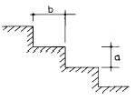
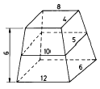
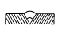
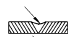
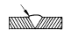
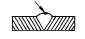

조경산업기사 (2004-05-23 기출문제)
1과목: 조경계획 및 설계
1. 다음 그림과 같은 옥외 계단에서 a(蹴上)와 b(踏面)의 치수가 가장 적합한 규모는?

- a = 15cm, b = 30cm
- a = 18cm, b = 32cm
- a = 20cm, b = 30cm
- a = 25cm, b = 32cm
(정답률: 80%)

2. 조경에 있어서 미적가치(美的價値)를 극대화 하기 위한 것은?
- 조경소재(건축적 소재와 같은 인공소재 및 자연석, 수목같은 자연소재)의 상호조화
- 화목류(花木類)의 다량식재에 의한 색감의 조화
- 다양한 조경요소간의 조화와 질서를 이룩하는 공간 기능의 극대화
- 조경설계에 의한 시공작품이 보다 여성적 표현이 되도록 추구
(정답률: 63%)
3. 교통 표지판(交通標識板)중 경계 혹은 주의 표지판의 형태는?
- 삼각형
- 사각형
- 원형
- 오각형
(정답률: 87%)
4. 일반적으로 기본계획의 대안 작성에서 가장 비중이 크게 다루어지는 부문 계획은?
- 식재 및 하부구조계획
- 단계별 집행계획
- 시설물 배치 계획
- 토지 이용 및 동선계획
(정답률: 81%)
5. 분석(分析)과정에서 전적으로 물리· 생태적 측면에서 분석 될 수 없는 것은?
- 지형
- 토양
- 인공구조물
- 기후
(정답률: 77%)
6. 근린생활권의 근린공원(近隣公園)에서 반드시 구비하지 않아도 되는 것은?
- 운동시설
- 주차장
- 유희시설
- 편익시설
(정답률: 65%)
7. 다음은 정원의 각 부분을 설명한 것으로 적당하지 않은 것은?
- 전정은 도로에서 현관까지의 뜰로서 도로에서의 조망을 고려하여 깊이가 있는 느낌을 주도록 한다.
- 주정은 거실, 식당, 침실에 면하고, 거실의 연장이라 할 수 있는 곳으로서 남쪽이나 동남쪽에 넓게 잡는 것이 좋다.
- 후정은 부엌이나 욕실의 앞부분으로서 식재는 되도록 상록수를 많이 심어 차폐효과를 낼 수 있도록 한다.
- 중정 또는 파티오는 주위가 건물로 둘러쌓인 부분으로서 채광, 통풍, 배수 등에 유의하여 설계하여야 한다.
(정답률: 48%)
8. 다음 연결이 잘못된 항은?
- 초점적 경관(focal landscape) - 계곡으로 떨어지는 폭포수
- 순간적 경관(ephemeral landscape) - 호수 위로 피어오르는 물안개
- 천연미적 경관(natural landscape) - 산속의 큰 암벽
- 파노라믹한 경관(panoramic landscape) - 나무가지 사이로 보이는 광활한 들
(정답률: 84%)
9. 문화재 조경의 기능이라 볼수 없는 것은?
- 보존기능
- 교학적기능
- 휴식기능
- 유희기능
(정답률: 78%)
10. 자동차 타이어, 철도, 침목, 폐차 콘크리이트 파이프 등을 이용한 놀이 시설을 주로 한 아동 공원은?
- 교통 공원
- 어린이 나라
- 모험 공원
- 성벽 놀이터
(정답률: 98%)
11. 시각적 선호에 대한 설명으로 옳지 않은 것은?
- 시각적 선호는 환경에 대한 미적 반응이다.
- 시각적 선호는 쾌락감의 일종으로 시각적 환경에 대한 호(好), 불호(不好)를 말하는 것이다.
- 시각적 선호를 결정짓는 물리적 변수로는 지형 지물, 식생, 물, 색채, 질감 형태 등이다.
- 시각적 선호의 측정은 절대적 선호도를 측정하여야 한다.
(정답률: 89%)
12. "계획 과정에서의 대중참여(Public Participation)를 확대해야 한다" 함은 무엇을 의미하는가?
- 이용자의 수요, 기호, 가치기준 등을 계획내용에 적극 반영하기 위함이다.
- 차후 발견될 수 있는 잘못된 계획내용에 대한 계획가의 책임을 면하기 위함이다.
- 대중 참여도를 참고로 하여 장래 이용자 추계를 하고자 함이다.
- 대중 참여를 유도하여 계획에 소요되는 경비를 절감하기 위함이다.
(정답률: 90%)
13. 다음 중 국립공원에 속하지 않는 곳은?
- 북한산
- 설악산
- 한라산
- 대둔산
(정답률: 59%)
14. 다음 중 도로 및 주차장 설치 장소 선정시 고려 요소가 아닌 것은?
- 다양한 천연적 관심거리가 있는 지역
- 지나친 절토나 성토를 요하지 않는 평탄한 곳
- 토양의 안정도가 높은 곳
- 노선 선정시 가급적 식생의 제거를 피할 수 있는 곳
(정답률: 79%)
15. 로마의 3대 별장(Villa)에 속하지 않는 것은?
- 파르네제 장(Villa Farnese)
- 에스테 장(Villa d'Este)
- 카스텔로 장(Villa Castello)
- 란테 장(Villa Lante)
(정답률: 62%)
16. 인위적으로 흙을 쌓아서 만든 계단식 후원은?
- 덕수궁의 함녕전 후원
- 경복궁의 교태전 후원
- 창덕궁 후원에 있는 연경단 선향제의 후원
- 창덕궁 낙선재의 후원
(정답률: 84%)
17. 교통량이 많은 곳에 적당하고 주차 및 출입폭이 최소이며 1대당 연장은 가장 긴 주차방식은?
- 평행주차
- 직각주차
- 60° 주차
- 45° 주차
(정답률: 69%)
18. 태양광선의 영향을 크게 받는 테니스장 장축(長軸)의 방위는 다음 중 어떤 것이 적합한가?
- 정동서(正東西)방향
- 정동서에서 남북 어느 한쪽으로 30° 기울어진 방향
- 정남북에서 동서 어느 한쪽으로 30° 기울어진 방향
- 정남북을 기준으로 서쪽으로 5° 기울어진 방향
(정답률: 61%)
19. 먼셀(Munsell)의 색환은 몇 가지의 순색으로 분할 되어 있는가?
- 10 색
- 24 색
- 12 색
- 16 색
(정답률: 52%)
20. 최대시의 이용자수 2,000명, 주차장 이용율 90%, 차 1대당 수용인원 20명, 1대당 주차면적 40 m2 라면 주차장의 면적은?
- 1,600m2
- 2,400m2
- 3,600m2
- 4,000m2
(정답률: 90%)
2과목: 조경식재
21. 특정 군집에서 가장 많이 나타나는 몇몇 종을 가리키는 용어는?
- 핵심종
- 우점종
- 희소종
- 고유종
(정답률: 80%)
22. 산불 발생으로 인한 척박지에 산림복원을 위한 식재를 하고자 한다. 척박한 토양에 잘 적응하지 못하는 수종으로 구성된 것은?
- 소나무, 오리나무
- 상수리나무, 노간주나무
- 졸참나무, 자작나무
- 이팝나무, 물푸레나무
(정답률: 63%)
23. 방풍림의 구조를 설명한 것으로 가장 잘못 설명된 것은 어느 것인가?
- 방풍림은 1.5 ~ 2.0m의 간격을 가진 정삼각형 식재로 한다.
- 수림대의 길이는 수고와는 관계없이 필요한 만큼으로 한다.
- 5 ~ 7 열의 열식으로 한다.
- 폭은 10 ~ 20m로 한다.
(정답률: 79%)
24. 공장주변의 녹지를 조성할 때 전국에 걸쳐 식재가 가능한 수종은?
- 비자나무
- 가이즈까 향나무
- 후박나무
- 젖꼭지나무
(정답률: 70%)
25. 다음 수목들 중 비료목에 해당되지 않는 것은?
- 자귀나무, 족제비싸리, 칡
- 사방오리나무, 산오리나무, 오리나무
- 다릅나무, 두릅나무, 자작나무
- 아까시나무, 싸리나무, 사방오리나무
(정답률: 78%)
26. 군집의 변화 중 천이에 대한 설명으로 올바른 것은?
- 천이를 주도하는 것은 인간이다.
- 천이는 군집에 따른 물리적 환경의 변화와는 관련이 없다.
- 천이는 대부분 만년 이내 즉 1 ~ 5,000년 사이에서 발생된 변화다.
- 시간의 경과에 따른 군집변화과정으로서 군집발전의 규칙적인 과정을 나타낸다.
(정답률: 97%)
27. 아름다운 흰꽃이 피는 수종은?
- 오동나무, 백합나무
- 산수유, 생강나무
- 산딸나무, 태산목
- 자귀나무, 산벚나무
(정답률: 55%)
28. 임해매립지 녹화를 위한 수종선정 및 배식 방법에 대한 설명으로 맞는 것은?
- 가능한 한 내륙 지역의 자생수종을 선정한다.
- 식재밀도를 높게 하여 되도록 바람의 피해를 줄인다.
- 이식이 용이하면 염해에 약한 수종을 선정해도 좋다.
- 해안선에 바로 붙여 수목을 식재한다.
(정답률: 75%)
29. 나무를 심을 경우 심을 구덩이의 최소한 크기는?
- 뿌리분 지름의 1배이상 크기
- 뿌리분 지름의 1.5배이상 크기
- 뿌리분 지름의 2배이상 크기
- 뿌리분 지름의 2.5배이상 크기
(정답률: 72%)
30. 조경수목의 생태적인 특성에 대한 설명이 올바른 것은?
- 녹나무, 동백나무, 가문비나무는 난대성 수목이다.
- 수목의 내한성은 식재설계시 반드시 고려해야 할 필수요건이다.
- 일반적으로 조경수목은 사질양토와 사토에서 생육이 왕성하다.
- 수목은 전 부위의 10%가 수분이므로 임지(林地)에 있어서 건습은 수목의 성장관계를 좌우한다.
(정답률: 75%)
31. 일반적으로 생물 서식공간으로 생물이 서식할 수 있는 최소한의 면적을 의미하는 용어는?
- 생태통로(ecological corridor)
- 생태적 지위(niche)
- 서식지의 경계(edge)
- 비오톱(Biotope)
(정답률: 93%)
32. 다음 조경용 수목 중 음수(陰樹)가 아닌 것은?
- 금송, 섬잣나무
- 살구나무, 무궁화
- 잣나무, 독일가문비
- 칠엽수, 당단풍
(정답률: 66%)
33. 중앙분리대 식재수법 중 정형식(整形式)의 단점에 대한 설명으로 적당하지 않는 것은?
- 동일형의 수목 구입이 어렵다.
- 부분적인 훼손이 눈에 띄기 쉽다.
- 관리의 기계화가 어렵다.
- 보행자 횡단제어 효과가 적다.
(정답률: 52%)
34. 식물 분류학상 1속 1종에 속하는 식물은?
- 미선나무
- 플라타너스
- 목련
- 배롱나무
(정답률: 71%)
35. 파고라에 올릴 수 있는 덩굴성 식물이 아닌 것은?
- 능소화
- 으아리
- 골담초
- 으름
(정답률: 60%)
36. 다음 중에서 내연성, 내조성, 내염성이 가장 강한 수종은?
- 사철나무
- 목련
- 낙엽송
- 자작나무
(정답률: 72%)
37. 다음 조건을 가진 톨페스큐 1그램(gr)을 파종했을 때 얻을 수 있는 포기 수는 대략 얼마인가? (조건 : 1 그램 당 종자수:600알, 종자의 순도:90% , 발아율:90%, 유묘 고사 및 불발아율:40%)
- 약100
- 약200
- 약300
- 약400
(정답률: 45%)
38. 다음 중 신록의 색채가 담록색인 것은?
- 칠엽수, 은백양나무
- 산벚나무, 홍단풍
- 가중나무, 참중나무
- 서어나무, 위성류
(정답률: 41%)
39. 가로수의 식재기준에 대한 설명으로 틀린 것은?
- 건물로부터 일정간격 떨어져 심는 것이 바람직하다.
- 수종에 따라 다르나 보통 6∼10m 간격으로 심는다.
- 특수효과를 위한 가로수를 제외하고는 일반적으로 한 가로변에 여러 수종을 식재하는 것이 좋다.
- 차량통행의 안전을 위하여 커브길, 교통신호 등 각종 안내판의 시계를 가리는 장소에서는 식재를 제한 할수 있다.
(정답률: 84%)
40. 다음 중 생태형별 수생식물의 구분이 맞지 않는 것은?
- 침수식물 : 말, 물질경이, 대가래
- 부유식물 : 개구리밥, 연, 부들
- 부엽식물 : 마름, 자라풀, 택사
- 정수식물 : 달뿌리풀, 보풀, 줄
(정답률: 47%)
3과목: 조경시공
41. 옹벽 배근에 소요된 철근 수량을 산출해보니 D10은 80m, D13은 100m이었다. D13 (㎏/m = 0.995), D10 (㎏/m =0.560)의 가격(ton 당)이 320,000원이라면 재료비는 얼마인가?
- 39,808원
- 43,392원
- 46,176원
- 49,760원
(정답률: 52%)
42. 다음 그림을 보고 각주 공식에 의하여 토량을 구하면 얼마인가 ? (단위:m)

- 265m3
- 304m3
- 562m3
- 673m3
(정답률: 54%)
43. 임차료는 공사비 가운데 어느 곳에 들어가야 하는가?
- 경비
- 노무비
- 일반관리비
- 재료비
(정답률: 65%)
44. 공원 산책로의 포장재료로 잘 사용되지 않는 것은?
- 역청질 아스팔트
- 마사토
- 콘크리이트 블럭
- 타일
(정답률: 79%)
45. 하중에 대한 설명으로 옳지 않은 것은?
- 자동차의 중량과 같이 이동하는 하중을 활하중이라 한다.
- 정치된 구조물 자신의 무게는 고정하중이라 한다.
- 고정하중을 사하중이라고도 한다.
- 하중 작용 면적의 대소에 따라 동하중과 정하중으로 나눈다.
(정답률: 77%)
46. 1m3당 할증을 포함한 1 : 3 : 6 콘크리트의 배합에는 시멘트 220㎏, 모래 0.47m3, 자갈 0.94m3가 소요된다. 시멘트 1포대에 3,000원, 모래 1m3는 14,000원, 자갈 1m3는 12,000원이다. 콘크리트 1m3에 소요되는 재료비는 얼마인가?
- 29,000원
- 34,360원
- 343,600원
- 677,860원
(정답률: 62%)
47. 흉고직경, 근원직경에 의한 식재품 적용시 지주목을 세우지 않을 때 본품의 몇 %를 감하는가?
- 10%
- 15%
- 20%
- 25%
(정답률: 94%)
48. 철근 콘크리트로 조경 구조물을 제작할 때의 단점에 대한 설명 중 틀린 것은?
- 재료의 구득(求得)및 운반이 힘들며 원하는 형태의 구조물을 만들기가 곤란하다.
- 자중(自重)이 크므로 응용범위에 제한을 받는다.
- 압축강도에 비하여 인장강도가 작다.
- 균열이 생기기 쉽고 시공이 불량할 때 파괴 또는 개조가 곤란하다.
(정답률: 56%)
49. 시공관리의 주요한 목적에 해당되지 않는 것은?
- 우수한 품질 확보
- 최적 공기 확보
- 적정 이윤 추구
- 신공법 개발
(정답률: 80%)
50. 어느 목재의 함수율은 25%이다. 건조 전 100g 인 이 목재의 절대건조중량은 얼마인가? [단, 함수율 = { ( w ― w0 ) ÷ w0 } × 100 이다.]
- 20g
- 40g
- 60g
- 80g
(정답률: 69%)
51. 조경 설계 기준에서 정하고 있는 의자 앉음판의 높이는?
- 20 - 24cm
- 27 - 30cm
- 34 - 46cm
- 46 - 56cm
(정답률: 80%)
52. 인력 운반시 1목도라함은 보통 몇 kg을 말하는가?
- 20kg
- 40kg
- 60kg
- 80kg
(정답률: 48%)
53. 고정원(古庭園)의 경우 사괴석 담장의 줄눈은 대개 어떤 줄눈으로 시공하는가?
- 평줄눈
- 내민줄눈
- 빗줄눈
- 오목줄눈
(정답률: 71%)
54. 시멘트의 분말도에 대한 내용이 잘못된 것은?
- 분말도가 가는 것일수록 수화 작용이 빠르다.
- 분말도가 가는 것일수록 조기 강도는 떨어진다.
- 분말도가 가는 것일수록 워어커빌리티가 좋다.
- 분말도가 가는 것일수록 수축, 균열이 발생하기 쉽다
(정답률: 54%)
55. 기성고 누계곡선의 일반적인 형태는?
- S자형
- T자형
- C자형
- V자형
(정답률: 70%)
56. 다음 중 모멘트에 대한 설명으로 옳지 않은 것은?
- 모멘트란 힘의 1점에 대한 회전능률이다.
- 회전능률은 힘의 크기에 비례한다.
- 회전능률은 힘까지의 거리에 반비례한다.
- 시계 방향의 모멘트는 (+)로 표시한다.
(정답률: 71%)
57. 우수(雨水)유출량을 산정하는 공식은 Q=1/360·C·I·A로 나타낸다. 이 식에서 C가 의미하는 것은 무엇인가?
- 면적
- 유출계수
- 강우강도
- 유량(流量)
(정답률: 66%)
58. 품질관리 및 검사에 대한 설명으로 옳지 않은 것은?
- 공사용 재료는 사용 전에 감독자에게 견본 또는 자료를 제출한다.
- 시방서에 재료의 품질이 명시되지 않은 경우 생산 회사의 품질기준에 따른다.
- 사전 검사된 재료라도 현장에 반입되면 감독자로부터 사용여부를 승인 받아야 한다.
- 검사 또는 시험에 불합격한 재료는 지체없이 공사 현장으로부터 반출한다.
(정답률: 66%)
59. 6m 까지의 높이로 옹벽을 만들 경우 적용하는 옹벽 종류는?
- 캔틸레버 옹벽
- 반중력식 옹벽
- 중력식 옹벽
- 옹벽부축벽 옹벽
(정답률: 52%)
60. 콘크리이트의 강도에 관계되는 인자로 보기에 적당치 않은 것은?
- 양생온도
- 시멘트의 화학성분
- 시멘트의 분말색
- 가해지는 수분의 양
(정답률: 79%)
4과목: 조경관리
61. 축구 경기장에서 잔디의 깎기는 어느 정도 높이로 하여야 가장 좋은가?
- 50㎜ - 60㎜
- 5㎜ - 10㎜
- 40㎜ - 50㎜
- 10㎜ - 20㎜
(정답률: 52%)
62. 역T형 옹벽과 비슷하지만 안정성이 더 요구되거나 높은 옹벽에 적용되며 저판이 길기 때문에 저판상의 성토가 자중으로 간주되므로 안정되며 경제성이 높은 옹벽은?
- L형 옹벽
- 중력식 옹벽
- 부벽식 옹벽
- 지지벽 옹벽
(정답률: 78%)
63. 조경 관리계획의 수립절차 순서로 가장 옳은 것은?
- 관리목표 결정 - 관리계획 수립 - 관리조직 구성
- 관리계획 수립 - 관리목표 결정 - 관리조직 구성
- 관리조직 구성 - 관리목표 결정 - 관리계획 수립
- 관리목표 결정 - 관리조직 구성 - 관리계획 수립
(정답률: 77%)
64. 수목의 뿌리분 위의 둘레에 짚, 낙엽, 퇴비등을 피복하여 얻을 수 있는 효과로 볼 수 없는 것은?
- 토양 수분의 증산 억제
- 무기질 비료 제공
- 잡초 발생 방지
- 표토의 응고 방지
(정답률: 52%)
65. 흰불나방 구제를 위해 100cc의 디프테렉스 50% 유제를 1,000배로 희석하고자 할 때 물의 양은?
- 10 L
- 25 L
- 50 L
- 100 L
(정답률: 41%)
66. 표지판의 유지관리를 설명한 것 중 옳은 것은?
- 강판이나 강관의 청소는 강한 크리너를 사용한다.
- 도장이 퇴색된 곳은 재도장 하되 도장은 2 - 3년에 1회씩 칠한다.
- 표지판의 방향이 뒤틀어지거나 지주가 구부러진 것 등은 정기보수시 보수한다.
- 철판에 법랑 입힘을 한 경우 법랑이 깨어졌을 때는 수시로 현장에서 보수한다.
(정답률: 61%)
67. 부패된 줄기의 동공 외과수술시 순서가 가장 적당한 것은?
- 살균 및 살충제 사용 - 오염된 부분 제거 - 방수처리 - 충전재 사용
- 오염된 부분 제거 - 방수처리 - 살균 및 살충제 사용 - 충전재 사용
- 방수처리 - 살균 및 살충제 사용 - 오염된 부분 제거 - 충전재 사용
- 오염된 부분 제거 - 살균 및 살충제 사용 - 방수처리 - 충전재 사용
(정답률: 71%)
68. 솔잎혹파리에 대한 설명으로 잘못된 것은?
- 연 1회 발생한다.
- 유충이 솔잎 기부에 들어가서 즙액을 빨아 먹는다.
- 서울지방인 경우 유충은 벌레집 속에서 월동한다.
- 성충은 5월 상순 ~ 6월 하순에 나타난다.
(정답률: 47%)
69. 가로등의 수명 중 가장 긴 것은?
- 수은등
- 백열등
- 할로겐등
- 나트륨등
(정답률: 74%)
70. 주요 비료의 시용법에 대한 설명으로 틀린 것은?
- 석회질소는 뿌리 가까이 사용하고, 황산암모늄이나 과인산석회와 혼용하면 더욱 효과적이다.
- 황산암모늄은 수용성이며, 산성이므로 연용을 피해야 한다.
- 요소는 흡수성이 강하며, 배합용으로는 적합하지 않다.
- 계분은 3요소가 고루 함유되어 있어서 기비로 적합하다.
(정답률: 74%)
71. 소나무의 새순을 치는 작업은 어디에 목적을 두고 있는가?
- 생장억제
- 갱신을 위해서
- 생리현상 조절
- 생장조장
(정답률: 72%)
72. 조경관리 업무를 위탁(도급)방식으로 할 때의 장점은?
- 긴급한 대응이 가능하다.
- 관리실태가 정확히 파악된다.
- 임기응변적 조치가 가능하다.
- 관리비가 싸게 된다.
(정답률: 59%)
73. 다음 중 덧 씌우기공법(Overlay)으로 보수하는 것이 가장 알맞은 항목은?
- 균열
- 부분적 박리
- 국부적 침하
- 파상의 요철
(정답률: 35%)
74. 야영장의 고사된 수목에 텐트 줄을 지지하였는데 폭풍으로 고사목이 쓰러져 야영객이 다쳤다면, 다음 중 어떤 유형의 사고에 가장 근접하겠는가?
- 설치하자에 의한 사고
- 관리하자에 의한 사고
- 이용자 부주의에 의한 사고
- 자연재해에 의한 사고
(정답률: 82%)
75. 화단관리에 적당치 않은 것은?
- 이식 후 토양수분에 주의하여 적절한 관수를 실시한다.
- 비료는 이식전에 기비(基肥)를 충분히 주고 이식 후는 엷은 액비(液肥)를 관수를 겸하여 준다.
- 생육불량한 것이나 고사(枯死)한 것은 부근의 식물을 다치게 하므로 제거하지 말고 그대로 두어야 한다.
- 이식한 화초는 생육에 따라 적심, 전정을 실시하여 개화를 고르게 한다.
(정답률: 74%)
76. 잣나무 털녹병의 중간기주는?
- 송이풀, 까치밥나무
- 측백나무, 향나무
- 모과나무, 배나무
- 졸참나무, 굴참나무
(정답률: 69%)
77. 조경시설물의 유지관리 작업계획 중 비정기적인 작업이 아닌 것은?
- 하자보수
- 개량
- 재해대책
- 계획수선
(정답률: 49%)
78. 다음 콘크리이트 포장의 보수에 대한 설명으로 적당하지 않은 것은?
- 줄눈이나 균열이 생긴 부분은 더 이상 수축 팽창하지 않도록 시멘트 모르타르로 채워 넣는다.
- 기층 재료를 보강하기 위해서는 포장면에 구멍을 뚫고 시멘트나 아스팔트를 주입해 넣는다.
- 포장 슬래브가 불균일할 때는 주입에 의해 포장면을 들어 올린다.
- 콘크리이트 포장 슬래브의 균열이 많아져서 전 면적으로 파손될 염려가 있는 경우에는 덧씌우기를 한다.
(정답률: 30%)
79. 다음 지주목에 관한 설명 중 틀린 것은?
- 이식된 수목의 조기 활착을 유도한다.
- 가급적 낮게 설치함이 기능적이다.
- 답압을 방지하고, 수목을 보호한다.
- 교목의 경우 반드시 설치함이 좋다.
(정답률: 69%)
80. 다음은 철재의 용접불량 상태를 나타낸 단면 그림이다. 판면 부족은 어느 것인가?




(정답률: 72%)
따라서, 올바른 치수를 선택하기 위해서는 인간공학적인 측면을 고려해야 합니다. 일반적으로 a와 b의 합은 45cm ~ 47cm 정도가 적절하다고 알려져 있습니다.
그러므로, 보기 중에서 a와 b의 합이 45cm ~ 47cm에 가장 근접한 것은 "a = 15cm, b = 30cm" 입니다.
예를 들어, a가 너무 크면 발을 올리는 데 어려움을 느낄 수 있고, b가 너무 크면 발을 내딛는 데 어려움을 느낄 수 있습니다. 따라서, 인간공학적인 측면을 고려하여 a와 b의 합이 적절한 범위에 있도록 선택하는 것이 중요합니다.